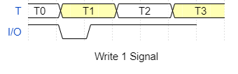
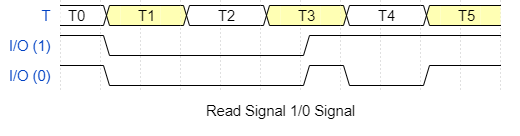
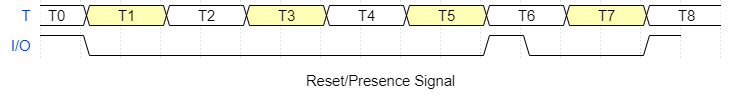

|
One Pin Comms Link 1.0
One Pin Serial comms link layer implemented in software only
|
|
One Pin Comms Link 1.0
One Pin Serial comms link layer implemented in software only
|
OnePin is a communications link is between a Primary device (PRI) and a Secondary device (SEC). The PRI is assumed to have more computational power be more capable than the SEC, which is envisaged as a small embedded processor providing local control for a sensor or actuator.
OnePin works using just one digital I/O pin and electrical ground per device pair, switching the direction of signal flow according to a timer based protocol implemented in both the PRI and SEC. The electrical connection depends on the hardware implementation, which mainly needs to ensure that the digital HIGH and LOW signal voltages are are compatible between devices.
Electrically, the link is idle HIGH and communications is effected by pulling the link LOW. When the I/O pins are set to input mode in the PRI or SEC they are pulled HIGH using internal pullup resistors (INPUT_PULLUP). However, an external pullup is also possible and compatible with the operations of the OnePin library.
The communications link timing is divided into fixed time slots T microseconds (µs) long and all protocol timing is expressed as as multiples of T. There is no link clock - communications are synchronized to the falling edge of PRI. This is most effective when PRI timing functions are more accurate than SEC's. As all activity occurs on the same wire, communication is half duplex.
PRI initiates every communication between the devices down to bit level transfers for both directions. OnePin is also highly tolerant of SEC device failure. PRI can reestablish communications on the first packet when both devices are available - when the PRI restarts communications SEC will respond and signal its presence.
Each OnePin transaction occurs in packet up to 32 bits long. Data transfers occur as sequential bits starting with the LSB (20). The content and meaning of these data packets are determined by the application.
There are 5 basic signals used for communications (Write0, Write1, Read, Reset/Presence) described below. The timing (length) of the first part of the signal (header or preamble) identifies the signal type.
Transmission of a packet begins with PRI initiating a Reset Signal, then:


Note: The reset signal is the start of every transaction.
